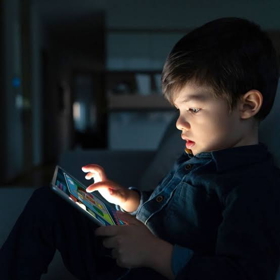

estudo avaliou os impactos do uso de dispositivos touchscreen, como tablets e
smartphones, em crianças menores de 5 anos.
Publicado na revista brasileira Psicologia: Reflexão e Crítica, em 2020, este
estudo avaliou os impactos do uso de dispositivos touchscreen, como tablets e
smartphones, em crianças menores de 5 anos.
Objetivo do Estudo:
Examinar os benefícios e malefícios do uso de dispositivos touchscreen
no desenvolvimento e comportamento de crianças menores de 5 anos, com foco
em fatores como tempo de tela, mediação parental e conteúdo.
Como foi Conduzido?
O estudo utilizou as diretrizes do método PRISMA, revisando 11 estudos
publicados entre 2000 e 2018. As variáveis encontradas incluíram tipo
de dispositivo, impacto no comportamento e resultados educacionais.
Resultados
Os dispositivos touchscreen foram associados a impactos positivos, como
melhorias em habilidades motoras finas quando usados com supervisão parental
e aplicativos educativos.
| Id | Faixa Etária | Tempo Máximo de Tela Diário | Orientações Importantes |
|---|---|---|---|
| 1 | Menores de 2 anos | Zero (0 horas) | Nenhuma exposição passiva ou interativa. Exceção apenas para videochamadas com familiares. |
| 2 | 2 a 5 anos | No máximo 1 hora | Uso sempre supervisionado por um adulto e com conteúdo educativo. |
| 3 | 6 a 10 anos | 1 a 2 horas | Evitar jogos violentos e fazer pausas frequentes para descansar os olhos. |
| 4 | 11 a 18 anos | 2 a 3 horas | Nunca virar a noite jogando ou usando redes sociais; manter o tablet fora do quarto à noite. |
